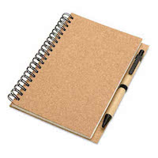
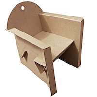
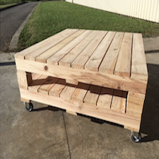
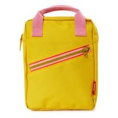
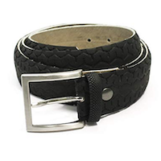
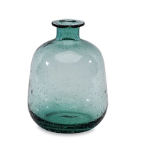

| Paper |
A very simple way to recycle paper is to sort it out when you throw it away. Sorting belongs to the recycling process "at the source". It is a gesture and a civic duty. |
A brand new paper with at least 50% fiber from printed (post-consumer) paper waste.Recycled paper is most often used in the manufacture of newsprint, corrugated paper, flat cardboard and hygiene papers. |
 |
| Cardbaord |
In the same way as paper, the cardboard is also sorted "at the source", when it is thrown away. |
Recycling cardboard makes it possible to create new cardboards, new packaging such as for eggs or constructions like seats |
 |
| Wood |
Here again, we must take the initiative to go to dump to sort all the wood you no longer need. This wood will then be fully reused. |
Recycled wood is used in many areas: for decoration, to build pallets, tables, furniture and many other utilities |
 |
| Plastic |
As a citizen, you must also sort your plastic at home in a trash for this purpose. It will then be sorted again for reuse. |
The recycling of my plastic packaging makes it possible to manufacture many objects of everyday life. For example, bottles and clear plastic bottles (like my water bottles) once recycled become once again the textile fiber used to stuff duvets, sleeping bags, and even soft toys. You can also make supermarket baskets, or just new plastic bottles and flasks. The reuse of plastic is very varied. |
 |
| Rubber |
To recycle your rubber, you can choose to donate it to places such as your local recycling facility or a tire retailer. |
There are just a handful of the amazing uses for recycled tire material such as : gravel substitute, crumb rubber, landfill medium, wastewater treatment filters, garden mulch or even belts ! |
 |
| Glass |
By putting the used packaging glasses in the bins or glass containers, we are assured that it will be recycled 100%, and to infinity. Attention: only glass packaging can be recycled, ie bottles, jars, jars, and flasks. It's very simple and you find some everywhere in the street next to your home. |
By recycling glass, we reduce greenhouse gases. Then, we save not only the raw material, but also the energy, because the transformation of the cullet in demand less than to treat the raw material. In addition, since glass can replace sand in many applications, its reuse also reduces the demand for sand, which is a non-renewable resource destined to disappear. |
 |